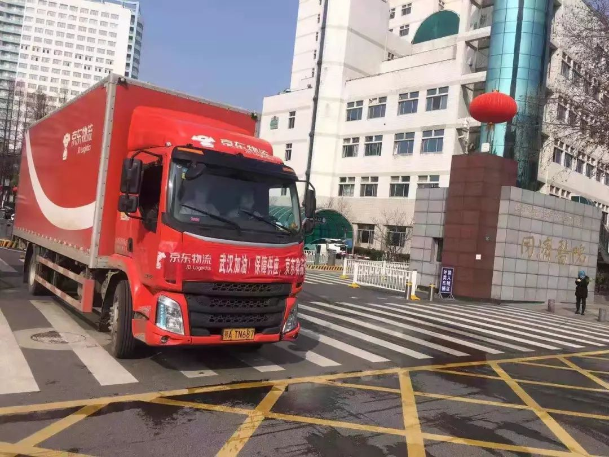
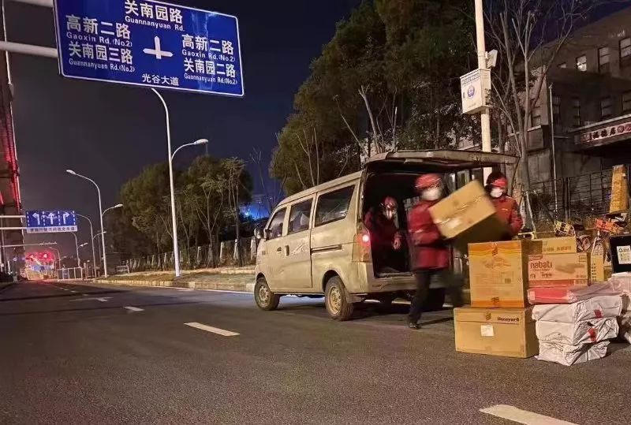
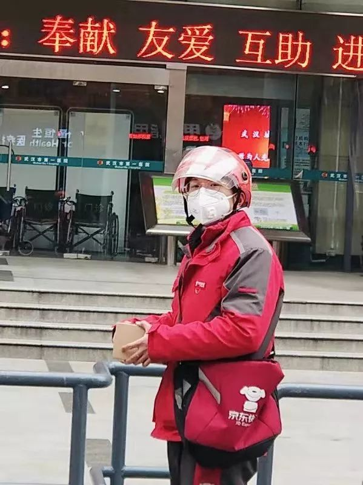

肺炎日记|2月1日：全国病例破万 社会力量参与抗疫呼声不止
原文链接 备份链接 【财新网】（记者 丁捷 综合）2020年2月第1天， 新型冠状病毒确诊患者数量已突破万人。仅次于武汉的重疫区——湖北黄冈下达“史上最严出行令”，2月1日起，严格控制市区居民出行。每户家庭每两天可指派1人上街采购生活物 …


作者 | 孙宏超 编辑 | 康晓
出品｜深网·腾讯小满工作室
欢迎下载腾讯新闻APP，阅读更多优质资讯

_编者按：_牵一发而动全身，面对疫情，需要中国全行业上下游企业携手共度难关，深网推出《共克时艰》系列报道，是为第一篇。
京东物流在武汉的办公地点离金银潭医院只有500米，而宝丰路营业部离协和医院只有400米。一位尚在武汉的京东物流快递员如此形容这种距离，“就像机枪手旁边上子弹的那个人。”
1月28日上午，宝丰营业部收到了4个送往协和医院的特殊订单，这些订单没有注明收件人，而是写着“请交给任何医务人员”、“隔离护士姐姐”、“协和医院的医护天使”和“白衣天使们”。
捐赠物品之外，还有大量类似的弹药（医用物资、民用物资）随着京东物流涌入几近封闭的湖北武汉。国家邮政局曾建议，春节期间有寄往武汉邮件快件需求，优先选用中国邮政、顺丰、京东三家品牌企业的邮政快递服务。
在绝大多数民营快递公司进入春节慢速节奏的当口，京东物流和顺丰为代表自营物流速度相对让人满意：1月24日上午，京东宣布向武汉市捐赠100万只口罩和6万医疗用品，7个小时后，京东物流就将首批物资送达医疗一线；火神山需要的大量口罩，京东物流仅用4个小时就调配完毕；17个小时，急需的医疗物资就从已经从广州抵达武汉。
短短几天时间里，京东物流将包括口罩、医用手套、护目镜、消毒液等超过236万件医疗防疫物资直接送达医院，通过铁路往武汉地区运送的防疫物资超过140吨（截至1月31日）。
和618、双11等传统电商大促相比，这个数字并不算多。去年的双11大促中，京东商城累计下单金额超过1271亿元，其中85%订单实现当日生产出库。但和那些策划半年甚至一年的活动不同，这是一场仓促打响的狙击战，人手短缺、道路封闭、运送方式复杂（无法送货上门）等问题均困扰着京东物流。
数年来搭建起的供应链物流基础设施和技术积累在此刻派上用场：2012年京东在华东区开始建立第一座集商品暂存、订单处理、分拣配送功能于一体的智能化、自动化的物流中心“亚洲一号”；到目前京东物流已经相继在全国建成并投用了25座亚洲一号智能仓群。
京东物流华中区域分公司市场负责人司思介绍，智能化、储存量高、订单处理能力强的武汉“亚洲一号”在此次搭建救援供应链过程中发挥了非常重要的作用，“可以满足当地的紧急需求和临时需求，甚至当地日常的一些生产，都可以在亚洲一号调货。这种储存能力在关键时刻，作用很大。” 位于武汉的亚洲一号日分拣能力超过百万单，效率是传统仓库的5倍多，京东在24号捐赠的首批物资就是从武汉本地仓库就近运出。

技术之外，在武汉的京东物流人成为了这座陆地孤岛的联通动脉，数以千计的快递小哥、仓储管理员、司机师傅选择留在战场。面对疫情，京东物流的态度是，“封了路，物流就停了，这样不行，消费者购买商品，要么就是线上购买，要么就是线下购买，线下渠道不方便，那我们就要尽可能的去为民众打开线上通道。”
1月29日深夜，京东集团CEO刘强东在朋友圈表示：“无论白天还是黑夜，街道一样冷冷清清；我们的背影很孤单，但是我们不孤独，我们知道四周满含着一双双期待的眼神，我们送的不是货，是温暖和希望！致敬坚持奋斗在一线的全体京东物流兄弟们，谢谢你们！”
警觉
尽管身处疫情风暴的核心地带，但已经在武汉学习、生活多年的当地人司思却没有意识到这座城市将面对的是一场怎样的灾难。
疫情传闻开始于2019年的最后一个月，在卫健委的官方通报中显示，不明原因肺炎的确存在，但并未发现明显人传人现象和医务人员感染。
司思第一反应是联系了京东零售集团口罩类目的相关负责人马禄义，提醒他们多多备货。和日后疫情的紧张程度相比，这个反应稍显常规。
信息不对称让京东备货团队难以作出准确判断，“当时舆论不是非常紧张，尽管采销在备货，但是也怕货备多了，影响后面的销售。”
第二批的口罩补货则开始于1月17号，此时人传人的消息开始出现，口罩销量急剧爆发，“现在京东平台上卖的货大部分都是17号开始下的订单，只要能够放开，几十万只的口罩，可能几分钟就卖完了。”
从毛细血管传递来的信息并未引起大脑充分注意，京东零售集团在北京的采销团队向武汉员工捐赠了七万只口罩，这是武汉快递员拥有的第一批初级装备。尽管京东物流方面要求快递员必须戴口罩，但大多数的快递员都处于一个观望的态度。
据《深网》向京东快递员与武汉市民了解，在1月份的前十天，几乎没有快递员佩戴口罩，一位快递员对《深网》表示，戴口罩工作不太方便，“因为要搬货、卸货、送货，口罩对于沟通还是有影响的。”
1月11日，首起死亡病例出现。
此时，京东集团高管通气会上开始出现防疫指示，京东开始行动了。刘强东此前曾指示公司高管：“全国任何地方发生灾难，京东临近库房的管理者都无需汇报，即有权捐出库房里灾区所需要的物资。”
但在物资之外，技术尤其是物流的支撑将成为京东为抗疫做出的最大贡献。事实上，京东是为数不多的假期不休的集仓储物流配送全套的电商零售商供应商，它一定程度上缓解了紧急事态下的民众需求紧张情绪。
1月22日，京东物流宣布将优先配送医疗机构指定的订单。全国各地的医疗机构可通过专线电话950616或线上客服指定优先配送的订单，京东物流将专门调配资源保障相关需求。
美丽逆行者
死亡病例的出现，使大家对新型病毒的担忧急剧上升。
武汉市卫健委在1月17日发布信息，采用优化后的检测试剂盒后，武汉新冠肺炎患者新增17例；1月20日凌晨，武汉卫建委更新数据显示，1月18日和19日两日共新增136名确诊患者，几乎同一时间，北京和广东也分别报告了一共3名确诊患者。
1月20日当晚，白岩松以直播的形式采访了钟南山，后者确认疫情已经出现“人传人”，并有14名医务人员被感染；1天后，武汉宣布对进出本地人口进行管控，并对华南海鲜市场及周边出入口实施24小时管控，随后开始的是口罩控制措施。
封城前夜，还有接近30万武汉人离城，但有人选择留下，也有人选择回来。
此时京东已经开始了每年的春节运力调度。不需要春节期间加班的很多快递员都已经购买了火车票，做好了返乡的准备工作，一些春节期间需要加班的一线员工则安排好了调休的日期。
疫情爆发后，京东物流华中分部的全部管理层都主动放弃了休假，一些一线员工则放弃了倒休，部分部承担配送业务的站长、站长助理也都下一线送货。
今年春节期间被安排值班的京东物流武汉仁和营业部快递员张昊选择了留下，“我本来计划初四回湖北应城老家和家人团聚。”但腊月二十九凌晨武汉封城，本来可以提前离开的他选择留在武汉上班。
留下不容易，坚持更难。由于武汉市公共交通现在都已经停止，住在武汉火车站附近的张昊没有办法乘公交车，只能靠骑共享单车上下班，“最大的心愿就是每天天黑之前把货送完，不然天黑了汽车回去不太安全。”

另一些京东物流的司机师傅则选择了逆行，腊月二十九，京东物流接到紧急需求，从广州运送医疗物资到武汉，接单的是京东物流的广州司机曾广祥。逆向而行，曾师傅留下一句话，“我一个人是小事情，还有一个城的人在等着。”
13个小时后，京东物流冷链运输车抵达武汉。
这仅是京东逆行者的缩影之一，广州、南京、山东、北京……数以千计的京东司机从各个城市前往武汉，返回，隔离，再前往武汉。还有大量的逆行未成者，武汉的各种通道封闭很快，一部分司机开车回来返工，但更多试图返回武汉开工的人被拦截在当地隔离。
封城开始
1月23日凌晨两点，武汉官方正式发布封城命令：自1月23日10时起，武汉全市城市公交、地铁、轮渡、长途客运暂停运营；无特殊原因，市民不要离开武汉；机场、火车站离汉通道暂时关闭。
一夜之间，武汉进入高度警备状态，甚至连医护人员都纷纷反应出行困难，
无法出门，快递、外卖等成为民众接触外界的几乎唯一途径。口罩单量开始猛涨，“因为不能出门，必须的口罩就只能在网上下单。”司思坦承，单量涨幅超过了之前的预测。
医疗物资之外，生活物资也开始产生紧缺。但几乎所有快递公司都无法提供足够的人手，即便是一向被称为春节不打烊的京东物流。“一些人觉得武汉街头无人，不会出现交通拥堵，是不是物流配送就会快了？实际是不会的，现在的配送方式，不能直接跟客户接触，需要提前约定地点拿货，导致我们人员的效率，比以往要低很多，每个人都是高负荷的去工作。”司思如此对《深网》描述。
在一线的武汉向阳营业部快递员肖云峰更是对《深网》表示，送货相当困难，“打电话虽然家家有人，但是顾客都是有要求的，放在什么地方。新小区还好，基本都有快递柜，老小区就没办法了。”90后快递员程武杰在一次送货时，客户在远处就对戴着口罩的他说，“你不要靠近我，就放在那里。”同时还一边走过来一边往空气里喷酒精。
这还是靠人的能力能够解决的问题，根据京东物流相关人士描述，目前武汉的快递员都要覆盖以前两到三个人的区域，每天快递员工作时长超过十小时，单量超过100。

京东物流武汉宝丰营业部的站长助理尚黎明和同事们负责的区域内有同济医院、协和医院、武汉市肺科医院等多家医院。疫情爆发后，针对医院的各种个人捐赠品基本都是由这个营业部的快递小哥进行运送。因为是特殊时期又恰逢春节，配送点人手短缺，尚黎明每天多数时间都是和同事们奔波在医院站点之间。大年初一时尚黎明在朋友圈发了消息，“请为还能给您配送的师傅们一份体谅，真的很不容易，大家都也有妻儿老小。”
可更大的麻烦是靠人力无法解决的，武汉周边公路交通几近中止，“武汉车进不来也出不去，很多全国调过来的货，无法进入武汉。在武汉的亚洲一号仓库，本来是可以覆盖包括湖北在内的多个周边城市，但货物很难运出去。”
据司思介绍，现在跨区公路通行问题比较棘手，她以北京企业捐赠消毒液来武汉为例，“在北京做完揽收后，可以通过公路、铁路或者飞机来进行运送。铁路的比较简单，火车运到武汉火车站，我们的货车去火车站就可以把货运回来，直接送往医院或者相关需要的职能部门；公路运输就比较复杂，必须在北京就先收集车辆信息，然后在本地跟相关部门进行报备，车才能过来，以前车可以揽货之后直接发货。”而且就算是这种相对复杂的运送方式，“也只有医疗物资可以办理相关通行证。”
另一个隐患是，即使京东物流已经给快递员、内部员工都做了很好的防护，包括口罩、防护服、定期消毒等，因为武汉现在不允许“聚众办公”，库房、快递站点可能被封。
抢跑除夕夜
除夕前，已有多个前线媒体报道显示，包括试剂盒在内的诊疗及医护设备并不齐备。
原因并不复杂，在封路之外，国内大型物流公司在冷链方面的短板显露无疑。辉睿生物总经理李辉就曾对媒体称，现在试剂盒日产量在两三万人份，生产端的供应充足，但物流存在困难。因为部分试剂盒的运输要求类似疫苗，需要冷链运输。
京东在冷链方面的布局有积累，深圳一家生物制药公司可以提供测试剂盒，但联系多家物流无果，在与京东沟通后，京东第一时间调度车辆，经过12个小时从深圳顺利将试剂盒交付给了武汉疾控中心。
接下来考验的是京东速度，以口罩为代表的防护品在春节期间激增，这非常考验京东物流应对突发事件的能力：1月24日，武汉“封城”，京东物流申请紧急调令，公铁联运保障防疫物资供应；除夕当天，共有从北京和广州两个城市的防疫物资通过铁路发往武汉；24日下午3时左右，载有检测试剂的车辆从广州出发连夜抵达武汉，顺利将试剂盒交付给了武汉疾控中心。
高速运转的背后是京东在全国的仓储布局，目前京东物流大件和中小件网络已实现大陆行政区县100%覆盖，自营配送服务覆盖了全国99%的人口，90%以上的自营订单可以在24小时内送达。

1月24号晚上，京东方面召开一个内部会议，目标是为各种医疗物资打开绿色通道。第二天凌晨，京东物流公布义务为武汉地区提供救援物资，开通了一个全国各地驰援武汉救援的通道。
这是一个运力十分紧张的通道，以接受地方政府组织，企业事业单位捐赠物品为主，不接受个人捐赠。
这个通道的顺畅流转成为了武汉地区的呼吸机之一，社会机构、生产企业大批量捐赠的医疗物资，火神山、雷神山建设需要的相关用品通过京东物流不断进入武汉。
京东还需加速自己的外部交接合作。首先与合作商家上，京东已经与各品类开展自营合作的核心品牌商家密切沟通，推动他们加班生产、优化库存。如与口罩核心供应商3M及霍尼韦尔等实现了自营合作，供应商生产的产品将直接从工厂运输到京东仓库，保证能在第一时间送达到到用户手中。
除夕当晚，京东物流需要给四家医院各送两万只口罩，这是一次在正常运输范围之外的临时任务，“本来以为司机会很难协调，但是到了现场会发现虽然大家都戴着口罩，但所有的司机都非常主动的帮忙装货卸货。”司思如此对《深网》介绍。

仅仅用时不到四个小时，四家医院全部收到了急需的口罩。
1月30日中午，三辆载有坐便器、洗脸盆、花洒、龙头等共计12吨、70方卫浴建材的京东物流车辆，抵达在建的武汉火神山医院，这是卫浴企业恒洁卫浴计划为武汉火神山医院捐赠的一批卫浴产品。
京东快递小哥登上了央视《新闻联播》，“我们做的可能不是一件多伟大的事情，但是有很多人可能需要这些医疗物资啊，我们不去送，那么有更多人可能会因此出现意外的情况，肯定不是我们希望的。”尚黎明说，“能够坚守多长时间，我们就坚守多长时间，我尽到我最大努力了，对得起我良心，对得起最起码这个人，反正我觉得，我做的事对得起我良心，是我最大的满足。”
看不见的手
华中大区、武汉市处于疫情的最中心，京东物流在武汉市的相关动向正被复制到其他疫区，“除了武汉之外，各个城市也都相继发现疑似和确诊的情况，京东物流在武汉的处理方案也开始同步到其他各个城市。”司思如此对《深网》表示。
在京东物流看来，武汉、华中是前线，集团的系统和人员都会迅速支持，其他区域也会以各种形式来援助华中，“湖北的高速都封闭了，其他区域就会来援助我们做前端统筹。”
疫情爆发前期，京东就先捐赠了一批口罩，在刚刚爆发时又宣布捐赠一百万只口罩给武汉的相关机构。司思对《深网》称，京东近年来努力提升技术能力，“京东的生态现在非常复杂，供应链系统涉及到采购、物流、运营、平台服务，甚至还有公益组织，在整个过程中，采购跟物流能够很好的去进行联动，能够对各种需求做到第一时间响应。有了这些技术的支持，京东公益就能决策说有底气捐出百万级别的口罩，我们的存货也保障了在捐赠的同时不会影响到普通民众的口罩需求。”
但京东物流方面也表示，如果疫情的人数还是在一直上升的话，那可能两三周内口罩问题都没有办法解决，“所有的工厂确实都在紧急生产，但是很多工厂的货直接就被政府调用或者提前下了订单，京东不一定拿得到货。但如果说疫情有所缓和，民众没有恐慌性囤货，保障正常使用，现在工厂的产量是没有问题的。”
和3M等供应商互动的同时，京东也正在启动海外市场，通过在印尼、韩国的分公司，采购口罩运回国内。
货物少，技术手段干扰可以帮助更需要的人拿到更需要的货，据司思介绍，京东在前期对接口罩的时候，对这个行业不是非常熟悉，但随着对商品把控愈加精准，会在前台做一些干预，“比如把医用型号、N95尽量前提，搜索口罩的时候把保暖功能、滤花粉雾霾功能的口罩放在搜索结果后面，减少消费者识别和选择的难度。同时，通过一些系统和人工的手段，把一些虚假宣传、疯狂涨价的商家进行处罚。”
“技术保障了每个人都能全心投入，努力的去做好自己的事情就好了。”司思如此对《深网》表示。
本文版权归“腾讯新闻”所有，如需转载请在文后留言，经允许后方可转载，并在文首注明来源、作者及编辑，文末附上深网二维码。
第533期
原文链接 备份链接 【财新网】（记者 丁捷 综合）2020年2月第1天， 新型冠状病毒确诊患者数量已突破万人。仅次于武汉的重疫区——湖北黄冈下达“史上最严出行令”，2月1日起，严格控制市区居民出行。每户家庭每两天可指派1人上街采购生活物 …
原文链接 备份链接 来源：腾讯新闻《潜望》 栏目 作者：王潘 2020年元旦前后，武汉新型肺炎的新闻曝光，小米区域拓展部副总裁、武汉总部总经理刘国俊要求团队尽快备好口罩、药物和体温测量仪等可能有助于武汉当地员工防御病毒的措施。 “原本小米 …
原文链接 备份链接 【财新网】（记者 黄蕙昭 综合）新型冠状病毒肺炎防控战“全国总动员令”终于落地：今日，中共中央政治局常务委员会召开会议，决定成立应对疫情工作领导小组，向湖北等疫情严重地区派出指导组。 “总动员令”之下，武汉肺炎防控 …
原文链接 备份链接 《战疫口述记》，是燃财经在新型冠状病毒肺炎期间推出的特别栏目，记录疫情亲历者的观察和感受。本文为第6篇，查看前5篇请点击《我和公司都快熬不住了》《节后返京，太太太南了》《我的“流浪”春节》《农村这样防肺炎》《我在武汉 …
原文链接 备份链接 什么拉长了社会捐赠物资从红十字会的仓库到疫情一线医务人员手中的最后短暂的路程？又是谁夺走了医生上战场的武器？ 记者 | 郭苏妍 叶雨晨 邓舒夏 王一越 编辑 | 张云亭 制图 | 程 星 2月1日，中国红十字总会工作 …